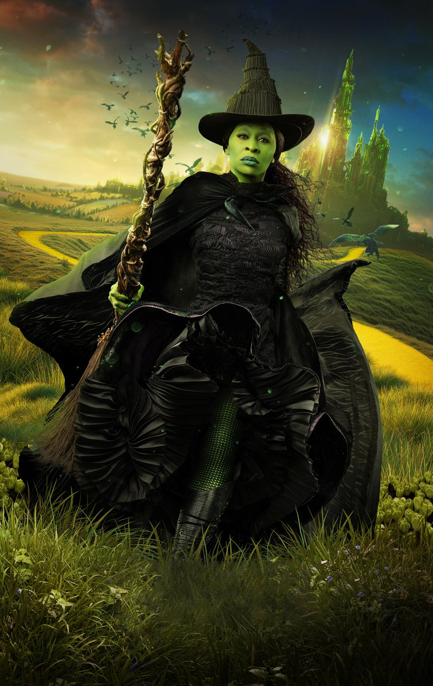

Elphaba Thropp, later known as the Wicked Witch of the West, and also known by the nickname "Elphie," is a green-skinned woman with powerful magical abilities. As a result of this, she was scorned for most of her life by her family and peers. Elphaba gained the opportunity of a lifetime when renowned sorceress Madame Morrible noticed her power one fateful day at Shiz University, offering to personally tutor her in magic to one day serve the Wizard of Oz.